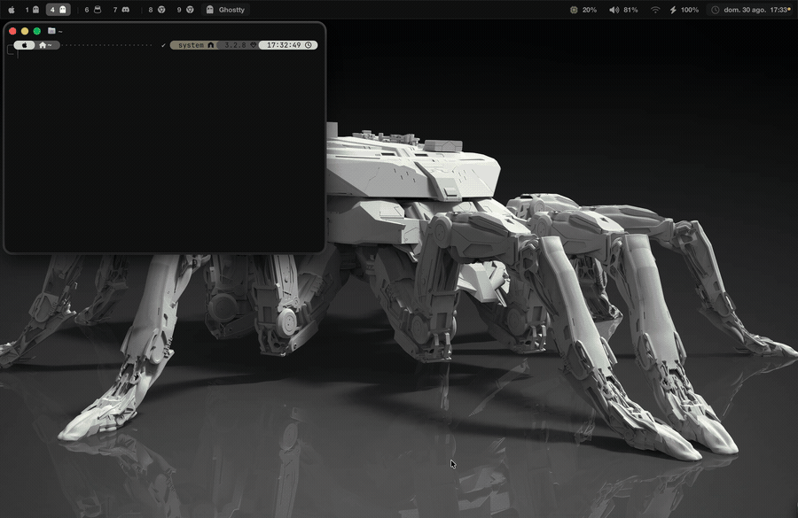

Un solo comando
theme osaka-jade y cambia todo: no vas app por app tocando 12 configuraciones distintas.
Compatible con Omarchy
No comparte código con Omarchy, pero sí su formato — la mayoría de sus temas funcionan aquí sin tocarlos.
Nada que instalar aparte
Sin Python, sin Homebrew, sin runtime. La app trae 24 temas listos y el CLI vive dentro del bundle.
Qué cambia al cambiar de tema
| App | Cómo |
|---|---|
| Ghostty, kitty, Alacritty, WezTerm, iTerm2 | en vivo, sin reiniciar |
| SketchyBar, JankyBorders, herdr | en vivo |
| Fondo de escritorio | todos los Spaces y pantallas |
| Modo claro/oscuro del sistema | sigue al tema |
| VS Code, Neovim, Zed, btop, tmux | al aplicar / recargar |
Instalación
artheme install # conecta lo que tengas instalado
artheme doctor # comprueba qué encontró
artheme osaka-jade # cambia de tema